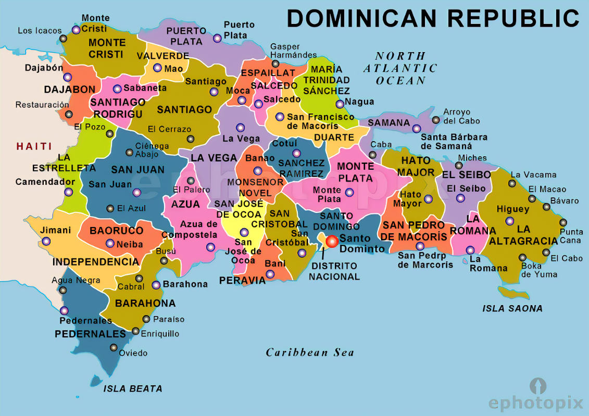

<a href="bottom">Bottom</a>
<h1>Dominican Republic</h1>
  
<ol>
  <li><a href="https://en.wikipedia.org/wiki/Azua,_Dominican_Republic">Azua</a></li>
  <ul>
    <li>Azua de Compostela</li>
    <li>Estebania</li>
    <li>Guayabal</li>
    <li>Las Charcas</li>
    <li>Las Yayas de Viajama</li>
    <li>Padre Las Casas</li>
    <li>Peralta</li>
    <li>Pueblo Viejo</li>
    <li>Sabana Yegua</li>
    <li>Tabara Arriba</li>
  </ul>
  <li><a href="https://en.wikipedia.org/wiki/Baoruco_Province">Baoruco</a></li>
  <ul>
    <li>Neiba</li>
    <li>Galvan</li>
    <li>Los Rios</li>
    <li>Tamayo</li>
    <li>Villa Jaragua</li>
  </ul>
  <li><a href="https://en.wikipedia.org/wiki/Barahona,_Dominican_Republic">Barahona</a></li>
  <ul>
    <li>Santa Cruz de Barahona</li>
    <li>Cabral</li>
    <li>El Penon</li>
    <li>Enriquillo</li>
    <li>Fundacion</li>
    <li>Jaquimeyes</li>
    <li>La Cienaga</li>
    <li>Las Salinas</li>
    <li>Paraiso</li>
    <li>Polo</li>
    <li>Vicente Noble</li>
  </ul>
  <li><a href="https://en.wikipedia.org/wiki/Dajabón">Dajabon</a></li>
  <ul>
    <li>Dajabon</li>
    <li>El Pino</li>
    <li>Loma de Cabrera</li>
    <li>Partido</li>
    <li>Restauracion</li>
  </ul>
  <li><a href="https://en.wikipedia.org/wiki/Duarte_Province">Duarte</a></li>
  <ul>
    <li>San Francisco de Macoris</li>
    <li>Arenoso</li>
    <li>Castillo</li>
    <li>Eugenio Maria de Hostos</li>
    <li>Las Guaranas</li>
    <li>Pimentel</li>
    <li>Villa Riva</li>
  </ul>
  <li><a href="https://en.wikipedia.org/wiki/El_Seibo_Province">El Seibo</a></li>
  <ul>
    <li>Santa Cruz de El Seibo</li>
    <li>Miches</li>
  </ul>
  <li><a href="https://en.wikipedia.org/wiki/El%C3%ADas_Piña_Provincee">Elias Pina</a></li>
  <ul>
    <li>Comendador</li>
    <li>Banica</li>
    <li>El Llano</li>
    <li>Hondo Valle</li>
    <li>Juan Santiago</li>
    <li>Pedro Santana</li>
  </ul>
  <li><a href="https://en.wikipedia.org/wiki/Espaillat_Province">Espaillat</a></li>
  <ul>
    <li>Moca</li>
    <li>Cayetano Germosen</li>
    <li>Gaspar Hernandez</li>
    <li>Jamao al Norte</li>
  </ul>
  <li><a href="https://en.wikipedia.org/wiki/Hato_Mayor_Province">Hato Mayor</a></li>
  <ul>
    <li>Hato Mayor del Rey</li>
    <li>El Valle</li>
    <li>Sabana de la Mar</li>
  </ul>
  <li><a href="https://en.wikipedia.org/wiki/Hermanas_Mirabal_Province">Hermanas Mirabal</a></li>
  <ul>
    <li>Salcedo</li>
    <li>Tenares</li>
    <li>Villa Tapia</li>
  </ul>
  <li><a href="https://en.wikipedia.org/wiki/Independencia_Province">Independencia</a></li>
  <ul>
    <li>Jimani</li>
    <li>Cristobal</li>
    <li>Duverge</li>
    <li>La Descubierta</li>
    <li>Mella</li>
    <li>Postrer Rio</li>
  </ul>
  <li><a href="https://en.wikipedia.org/wiki/La_Altagracia_Province">La Altagracia</a></li>
  <ul>
    <li>Salvaleon de Higuey</li>
    <li>San Rafael del Yuma</li>
  </ul>
  <li><a href="https://en.wikipedia.org/wiki/La_Romana_Province,_Dominican_Republic">La Romana</a></li>
  <ul>
    <li>La Romana</li>
    <li>Guaymate</li>
    <li>Villa Hermosa</li>
  </ul>
  <li><a href="https://en.wikipedia.org/wiki/Independencia_Province">La Vega</a></li>
  <ul>
    <li>Concepcion de La Vega</li>
    <li>Constanza</li>
    <li>Jarabacoa</li>
    <li>Jima Abajo</li>
  </ul>
  <li><a href="https://en.wikipedia.org/wiki/Mar%C3%ADa_Trinidad_Sánchez_Province">Maria Trinidad Sanchez</a></li>
  <ul>
    <li>Nagua</li>
    <li>Cabrera</li>
    <li>El Factor</li>
    <li>Rio San Juan</li>
  </ul>
  <li><a href="https://en.wikipedia.org/wiki/Monseñor_Nouel_Province">Monsenor Nouel</a></li>
  <ul>
    <li>Bonao</li>
    <li>Maimon</li>
    <li>Piedra Blanca</li>
  </ul>
  <li><a href="https://en.wikipedia.org/wiki/Monte_Cristi_Province">Monte Cristi</a></li>
  <ul>
    <li>San Fernando de Monte Cristi</li>
    <li>Castanuela</li>
    <li>Guayubin</li>
    <li>Las Matas de Santa Cruz</li>
    <li>Pepillo Salcedo</li>
    <li>Villa Vasquez</li>
  </ul>
    <li><a href="https://en.wikipedia.org/wiki/Monte_Plata_Province">Monte Plata</a></li>
    <ul>
      <li>Monte Plata</li>
      <li>Bayaguana</li>
      <li>Peralvillo</li>
      <li>Sabana Grande de Boya</li>
      <li>Yamasa</li>
    </ul>
  <li><a href="https://en.wikipedia.org/wiki/Pedernales_Province">Pedernales</a></li>
  <ul>
    <li>Pedernales</li>
    <li>Oviedo</li>
  </ul>
  <li><a href="https://en.wikipedia.org/wiki/Peravia_Province">Peravia</a></li>
  <ul>
    <li>Bani</li>
    <li>Nizao</li>
  </ul>
  <li><a href="https://en.wikipedia.org/wiki/Puerto_Plata_Province">Puerto Plata</a></li>
  <ul>
    <li>Puerto Plata</li>
    <li>Altamira</li>
    <li>Guananico</li>
    <li>Imbert</li>
    <li>Los Hidalgos</li>
    <li>Luperon</li>
    <li>Sosua</li>
    <li>Villa Isabela</li>
    <li>Villa Montellano</li>
  </ul>
  <li><a href="https://en.wikipedia.org/wiki/Samaná_Province">Samana</a></li>
  <ul>
    <li>Santa Barbara de Samana</li>
    <li>Villa Isabela</li>
    <li>Sanchez</li>
  </ul>
  <li><a href="https://en.wikipedia.org/wiki/San_Cristóbal,_Dominican_Republic">San Cristobal</a></li>
  <ul>
    <li>San Cristobal</li>
    <li>Bajos de Haina</li>
    <li>Cambita Garabito</li>
    <li>Los Cacaos</li>
    <li>Sabana Grande de Palenque</li>
    <li>San Gregorio de Nigua</li>
    <li>Villa Altagracia</li>
    <li>Yaguate</li>
  </ul>
  <li><a href="https://en.wikipedia.org/wiki/San_José_de_Ocoa">San Jose de Ocoa</a></li>
  <ul>
    <li>San Jose de Ocoa</li>
    <li>Rancho Arriba</li>
    <li>Sabana Larga</li>
  </ul>
  <li><a href="https://en.wikipedia.org/wiki/San_Juan_Province_(Dominican_Republic)">San Juan</a></li>
  <ul>
    <li>San Juan de la Maguana</li>
    <li>Bohechio</li>
    <li>El Cercado</li>
    <li>Juan de Herrera</li>
    <li>Las Matas de Farfan</li>
    <li>Vallejuelo</li>
  </ul>
  <li><a href="https://en.wikipedia.org/wiki/San_Pedro_de_Macor%C3%ADs">San Pedro de Macoris</a></li>
  <ul>
    <li>San Pedro de Macoris</li>
    <li>Consuelo</li>
    <li>Guayacanes</li>
    <li>Quisqueya</li>
    <li>Ramon Santana</li>
    <li>San Jose de los Llanos</li>
  </ul>
  <li><a href="https://en.wikipedia.org/wiki/Sánchez_Ram%C3%ADrez_Province">Sanchez Ramirez</a></li>
  <ul>
    <li>Cotui</li>
    <li>Cevicos</li>
    <li>Fantino</li>
    <li>La Mata</li>
  </ul>
  <li><a href="https://en.wikipedia.org/wiki/Santiago_de_los_Caballeros">Santiago</a></li>
  <ul>
    <li>Santiago de los Caballeros</li>
    <li>Bisono</li>
    <li>Janico</li>
    <li>Licey al Medio</li>
    <li>Punal</li>
    <li>Sabana Iglesia</li>
    <li>San Jose de las Matas</li>
    <li>Tamboril</li>
    <li>Villa Gonzalez</li>
  </ul>
  <li><a href="https://en.wikipedia.org/wiki/Santiago_Rodr%C3%ADguez_Province">Santiago Rodriguez</a></li>
  <ul>
    <li>San Ignacio de Sabaneta</li>
    <li>Los Almacigos</li>
    <li>Moncion</li>
  </ul>
  <li><a href="https://en.wikipedia.org/wiki/Santo_Domingo">Santo Domingo</a></li>
  <ul>
    <li>Santo Domingo Este</li>
    <li>Boca Chica</li>
    <li>Los Alcarrizos</li>
    <li>Pedro Brand</li>
    <li>San Antonio de Guerra</li>
    <li>Santo Domingo Norte</li>
    <li>Santo Domingo Oeste</li>
  </ul>
  <li><a href="https://en.wikipedia.org/wiki/Valverde_Province">Valverde</a></li>
  <ul>
    <li>Mao</li>
    <li>Esperanza</li>
    <li>Laguna Salada</li>
  </ul>
  <li><a href="https://en.wikipedia.org/wiki/Distrito_Nacional">Distrito Nacional</a></li>
  <ul>
    <li>Santo Domingo</li>
  </ul>
</ol>
<a href="top">Top</a>